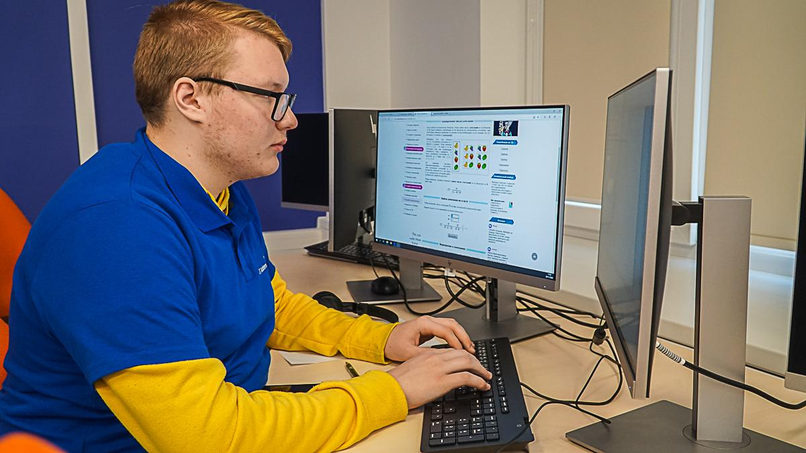

| Главная | Дизайн Сайты Игры |
|---|
// Мне 17 лет и я учусь в Ida-Virumaa Kutsehariduskeskus //Много лет работы и творчества за компьютером дают о себе знать. Я крайне заинтересован в том, чтобы делать что-то полезное или интересное, благодаря своим навыкам. В этом портфолио я постарался собрать самые яркие работы, которыми когда-либо занимался. |
 |
|---|